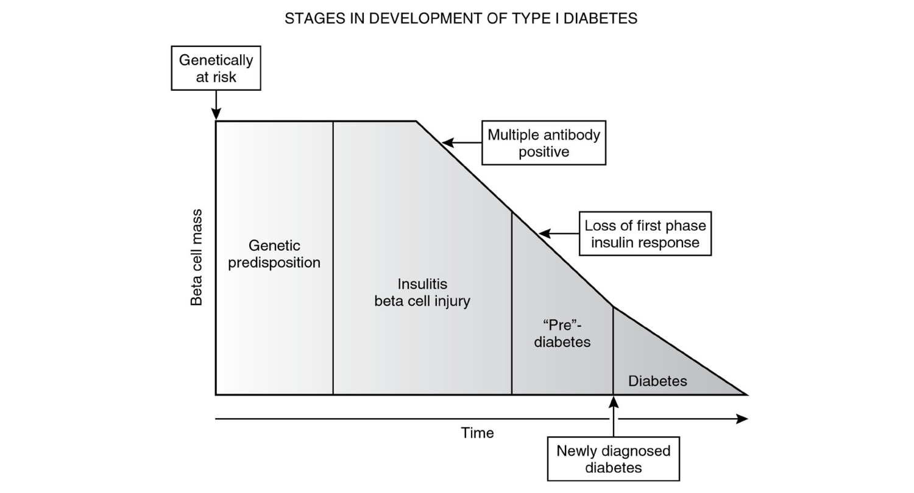
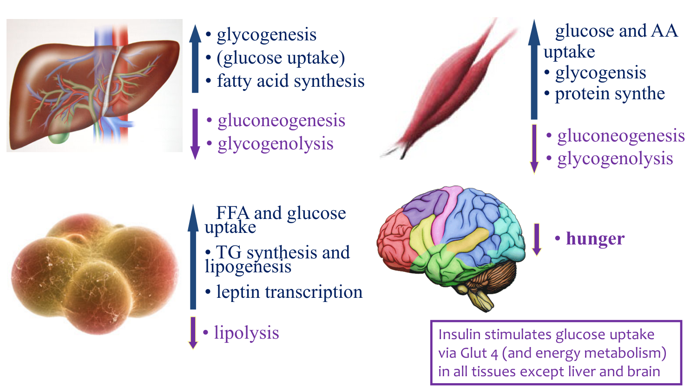
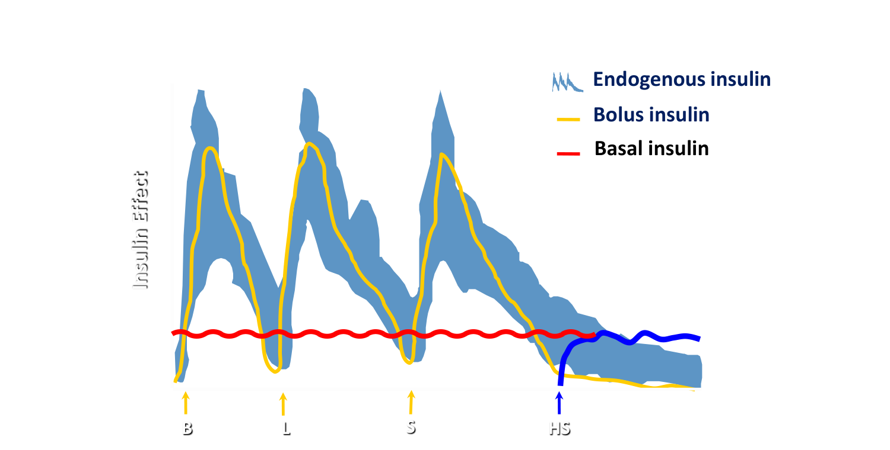
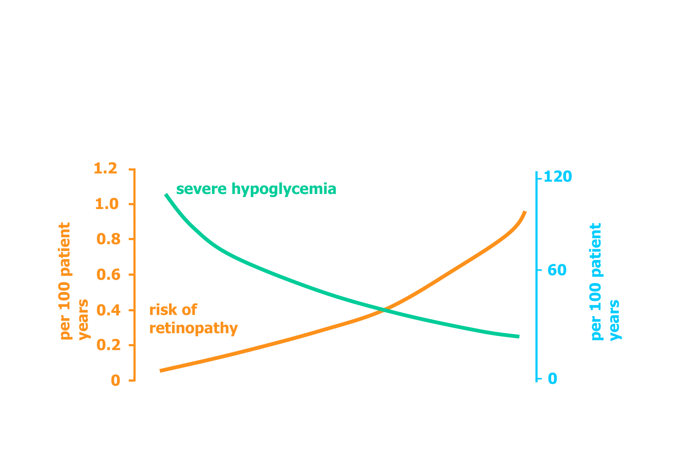

T1DM: Diagnosis & Management in Children & Adolescents
Learning Objectives
- Describe the signs and symptoms of hyperglycemia and new-onset T1DM.
- List the diagnostic criteria for T1DM.
- Discuss the main components of optimizing diabetes control.
- Explain why tight glycemic control matters (and what it trades off against).
- Discuss the acute complications of diabetes.
Case Presentation
8-Year-Old Boy
History: fatigue × 2 weeks; polyuria & nocturia × 3 weeks; polydipsia × 3 weeks; weight loss with no change in appetite; blurred vision. Previously healthy. Exam: mild dehydration.
Investigations: random blood glucose 18.9 mmol/L; urine glucose ++, ketones +.
Diagnosis: Type 1 diabetes.
Pathophysiology Recap
At birth, β-cell mass is 100%. A genetic predisposition (e.g. GAD, anti-islet, or anti-insulin antibodies) triggers a progressive autoimmune decline in β-cell mass over time:

By the time diabetes is clinically apparent, only ~20% of β-cell mass remains. This remaining function is why some patients enter a "honeymoon" period shortly after diagnosis, where residual insulin secretion makes glucose easier to control (lower insulin doses needed — see the dosing table below).
Major roles of insulin

The core problem in T1DM is simply lack of insulin: glucose can't be used, so the body "thinks" it's starving and ramps up glycogenolysis and gluconeogenesis — worsening the hyperglycemia already present.
Signs & symptoms
| Early | Late |
|---|---|
| Polydipsia | Vomiting |
| Polyuria | Dehydration, abdominal pain |
| Weight loss | Hypovolemic shock |
| Hyperventilation (acidosis) | |
| Drowsiness → coma |
Diagnostic Criteria
| Finding | Threshold |
|---|---|
| Random plasma glucose (with symptoms) | > 11.1 mmol/L |
| Fasting plasma glucose | > 7.0 mmol/L |
| 2-hr OGTT plasma glucose | > 11.1 mmol/L |
- Symptomatic patient (polyuria/polydipsia/weight loss + glycosuria/ketonuria): one abnormal glucose value is enough to diagnose.
- Asymptomatic patient: need two abnormal values.
- Fasting glucose and HbA1c are usually not necessary for diagnosing T1DM (unlike T2DM).
Management of the Newly Diagnosed Patient
Outpatient management rests on five pillars: BG monitoring, insulin administration, dietary counselling, education on optimizing metabolic control, and a multidisciplinary team.
Blood glucose monitoring
- 4×/day by finger-poke meter (before meals + bedtime), or continuous glucose monitor (CGM)
- Occasional overnight checks; every 2–3 hours during illness; anytime hypoglycemia is suspected
| Target (age < 18) | Value |
|---|---|
| Fasting BG | 4–8 mmol/L |
| Post-prandial BG | 5–10 mmol/L |
| HbA1c | < 7.5% |
Normal (non-diabetic) fasting BG is 3–6 mmol/L, and normal HbA1c is 4–6%. Targets are relaxed for patients with severe/frequent hypoglycemia or hypoglycemia unawareness. Diabetes Canada CPG, 2018
Insulin dosing & types
| Phase | Dose (units/kg/day) |
|---|---|
| Honeymoon phase | < 0.5 |
| Prepuberty | 0.7–1.0 |
| Puberty | 1.0–2.0 (insulin resistance rises with puberty) |
| Category | Onset/Duration | Examples |
|---|---|---|
| Prandial/Bolus — Rapid | Fast onset, short duration | Lispro, Aspart, Glulisine |
| Prandial/Bolus — Short | Fast onset, short duration | Human Regular |
| Basal — Intermediate | Slow onset, longer duration | NPH |
| Basal — Long | Slow onset, long duration | Detemir, Glargine, Degludec |
Insulin regimens
| Regimen | Composition | Trade-off |
|---|---|---|
| 3 injections/day | NPH + fast-acting | Simpler, but locks the patient into a strict meal/snack schedule — hard for spontaneous or irregular days |
| 4 injections/day | Long-acting (Lantus/Levemir/Tresiba) + fast-acting at each meal | More injections, but mimics physiologic basal-bolus insulin release and allows flexible meal timing |

Adjusting doses: sliding scale & carb ratios
A fixed dose isn't enough — the sliding scale adds/subtracts insulin based on the pre-meal BG reading, and a carb ratio covers however many carbs are actually eaten:
| BG (mmol/L) | Extra rapid insulin (units) |
|---|---|
| < 4 | −1 |
| 4–7 (target) | carb ratio only (e.g. 1 unit per 8–10g carb) |
| 7–9 | +1 |
| 10–13 | +2 |
| 14–16 | +3 |
| 17–20 | +4 |
| > 20 | +5 |
Key adjustment rule: a high (or low) reading reflects the insulin dose given before it — so fix the preceding dose, not the one at the same meal. A high lunch BG means the breakfast rapid-acting dose needs to go up.
Insulin pumps & CGM
- Pump: continuous subcutaneous insulin infusion into adipose tissue; a steady basal rate covers non-food needs, and patient-triggered boluses (from an entered carb ratio) cover meals and correct highs.
- Advantages: more reliable absorption, more precise dosing, less hypoglycemia risk — plus lifestyle flexibility (optional snack timing, skippable meals, easier shift work/travel).
- CGM: measures interstitial glucose every 5 minutes, sensor changed every 2 weeks; alerts before a patient goes out of range. Modern CGMs talk directly to pumps.
- Two patients can share an identical HbA1c of 7% yet have very different time-in-range — CGM captures day-to-day glycemic stability that A1c alone hides.
Why Tight Control Matters: The DCCT Trial
The 1993 Diabetes Control and Complications Trial compared intensive vs. conventional insulin therapy. Intensive therapy achieved a lower A1C — and lower A1C tracked with less retinopathy risk. But it came at a cost:

This is the central tension of T1DM management: push glucose down to prevent long-term microvascular complications, without pushing so hard that severe hypoglycemia becomes common.
Acute Complications: Hypoglycemia
(DKA is covered in a separate session.)
| Early (adrenergic) | Late (neuroglycopenic) |
|---|---|
| Shakiness | Hunger |
| Sweating | Drowsiness |
| Anxiety | Confusion |
| Hunger | Coma |
| Pallor | Convulsion |
- Mild/moderate: glucose tablet, juice, or glucose gel (absorbed via buccal mucosa)
- Severe/can't take oral glucose: glucagon (IM/SC or intranasal) or IV dextrose
- Prevention beats treatment: prompt treatment of early symptoms, regular (incl. nocturnal) BG monitoring, insulin adjustments around exercise, and sticking to the meal plan
Adapted (not reproduced verbatim) from Robert Stein, MDCM, FRCPC (Pediatric Endocrinology, Children's Hospital, LHSC), "Management of Type 1 Diabetes Mellitus in Children and Adolescents" (Parts A–C), plus lecture notes.